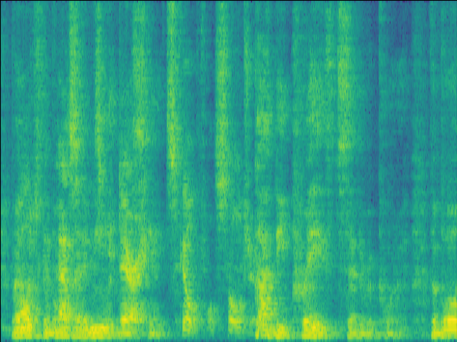
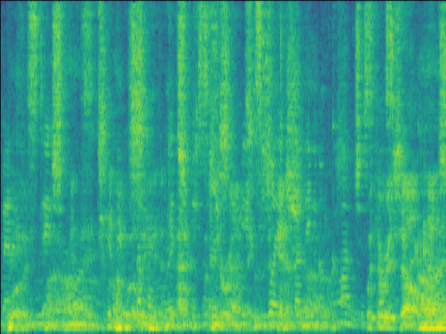

Abstract
Previously, Target Speaker Extraction (TSE) has yielded outstanding performance in certain application scenarios for speech enhancement and source separation. However, obtaining auxiliary speaker-related information is still challenging in noisy environments with significant reverberation. inspired by the recently proposed distance-based sound separation, we propose the near sound (NS) extractor, which leverages distance information for TSE to reliably extract speaker information without requiring previous speaker enrolment, called speaker embedding self-enrollment (SESE). Full- & sub-band modeling is introduced to enhance our NS-Extractor's adaptability towards environments with significant reverberation. Experimental results on several cross-datasets demonstrate the effectiveness of our improvements and the excellent performance of our proposed NS-Extractor in different application scenarios.
Compare with baseline models
- Mixture
means the mixture of the speech of near and far speakers, with a different number of speakers in the following three cases.
- GT
means ground truth, which is the speech of one near speaker.
- LSTM
means our unofficial implementation of Distance-based sound separation.
- UNet
means a lightweight 10-layer UNet model with five encoder and five decoder layers, the number of filters for a layer for the encoder/decoder is 16, 32, 64, 128, 256.
- Proposed
means our proposed NS-Extractor.
- Noticed: a near speaker is within 1.5 meters of the microphone, while a far speaker is more than 1.5 meters away.
Case 1: 1 near speaker & 1 far speaker.
| Case 1 | ||
|---|---|---|
| Mixture SI-SDR = -4.94 dB |
GT |
|
|  |  |
|
| LSTM SI-SDR = -3.8dB |
UNet SI-SDR = 4.62dB |
Proposed SI-SDR = 10.17dB |
Case 2: 1 near speaker & 2 far speakers.
| Case 2 | ||
|---|---|---|
| Mixture SI-SDR = -1.21dB |
GT |
|
| LSTM SI-SDR = 9.86dB |
UNet SI-SDR = 10.11dB |
Proposed SI-SDR = 13.12dB |
Case 3: 1 near speaker & 3 far speakers.
| Case 3 | ||
|---|---|---|
| Mixture SI-SDR = -8.46dB |
GT |
|
|  | ||
| LSTM SI-SDR = -0.05dB |
UNet SI-SDR = -1.86dB |
Proposed SI-SDR = 3.94dB |
Ablation Study 1
- Mixture
means the mixture of the speech of near and far speakers, with a different number of speakers in the following two cases..
- GT
means ground truth, which is the speech of near speaker.
- w/o F-Att
means the variant of proposed NS-Extractor without Frequency-attention module.
- w/o T-Att
means the variant of proposed NS-Extractor without Time-attention module.
- w/o SE
means the variant of proposed NS-Extractor without speaker encoder module.
- Proposed
means our proposed NS-Extractor.
- Noticed a near speaker is within 1.5 meters of the microphone, while a far speaker is more than 1.5 meters away.
Case 1: 1 near speaker & 1 far speaker
| Case 1 | ||
|---|---|---|
| Mixture SI-SDR = -4.84dB |
GT |
Proposed SI-SDR = 15.73dB |
| w/o F-Att SI-SDR = 14.84dB |
w/o T-Att SI-SDR = 12.71dB |
w/o SE SI-SDR = 15.73dB |
Case 2: 1 near speaker & 2 far speakers.
| Case 2 | ||
|---|---|---|
| Mixture SI-SDR = -4.27 |
GT |
Proposed SI-SDR = 7.13dB |
| w/o F-Att SI-SDR = 4.19dB |
w/o T-Att SI-SDR = 3.67dB |
w/o SE SI-SDR = -2.25dB |
Ablation Study 2
- Mixture
means the mixture of the speech of near and far speakers.
- GT
means ground truth, which is the speech of one near speaker.
- w/o SE
means the variant of proposed NS-Extractor without speaker encoder module.
- Proposed
means our proposed NS-Extractor.
- Normal RIR
means the RT60 of RIRs is between 0.1s and 0.5s.
- Faint RIR
means the RT60 of RIRs is betwwen 0.1s and 0.2s.
- Unintruded speech
means that 2 near speakers and 1 far speaker appear, with one of the near speakers being unexpected and appearing at the end of the speech.
- Intruded speech
means that 1 near speaker and 1 far speaker appear.
- Noticed:
a near speaker is within 1.5 meters of the microphone, while a far speaker is more than 1.5 meters away.
Case 1: normal RIR & unintruded speech
| Case 1 | |
|---|---|
| Mixture SI-SDR = -4.53dB |
GT |
| w/o SE SI-SDR = 9.44dB |
Proposed SI-SDR = 10.60dB |
Case 2: normal RIR & intruded speech
| Case 2 | |
|---|---|
| Mixture SI-SDR = -14.88dB |
GT |
 |
|
| w/o SE SI-SDR = -22.15dB |
Proposed SI-SDR = 5.85dB |
Case 3: faint RIR & unintruded speech
| Case 3 | |
|---|---|
| Mixture SI-SDR = 2.27dB |
GT |
| w/o SE SI-SDR = 14.22dB |
Proposed SI-SDR = 16.26dB |
Case 4: faint RIR & intruded speech
| Case 4 | |
|---|---|
| Mixture SI-SDR = -0.53dB |
GT |
 |
|
| w/o SE SI-SDR = 0.34dB |
Proposed SI-SDR = 11.63dB |